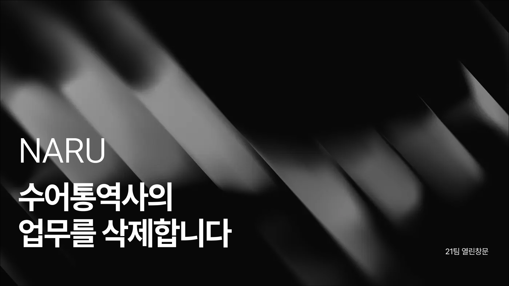

Naru (나루)
청각·언어장애인이 누구와도 통화할 수 있게 돕는 AI 음성 에이전트, 실시간 양방향 수어-음성 통화 웹 서비스

프로젝트 개요 (Overview)
핵심 가치: 별도 앱 설치나 전용 장비 없이, 일반 웹캠과 모바일 브라우저만으로 100% 온디바이스(Client-Side) 30fps 수어 인식 및 WebRTC 통화를 지원하는 배리어프리 커뮤니케이션 웹 서비스입니다.
타깃: 수어를 제1언어로 사용하는 농인(청각장애인) 및 음성 통화 연결이 필요한 청인(비장애인)
사용 기술 (Tech Stack)
Core & Framework
React 19, TypeScript, Vite 8, Bun
Vision & AI
@mediapipe/tasks-vision (WASM/WebGL 가속), Custom DTW
Real-time WebRTC
LiveKit WebRTC (livekit-client), MediaStream API
State & Architecture
TanStack Query v5, Zustand, FSD (Feature-Sliced Design)
주요 구현 및 기술적 기여 (Key Implementations)
1. 브라우저 온디바이스 실시간 수어 인식 파이프라인
- • MediaPipe 3D 랜드마크 추출: WASM 및 WebGL 가속을 활용해 손 21개 랜드마크와 상체 포즈 좌표를 30fps로 추출
- • 신체 상대적 정규화: 양 어깨 중심점을 원점 (0, 0, 0)으로 잡고 어깨 너비로 스케일을 정규화하여 사용자 거리/위치 변화에 강건한 좌표계 구축
- • 경량 DTW(Dynamic Time Warping) 분류: 30프레임 롤링 윈도우 시퀀스로 사용자 동작 속도 차이를 보정하며 실시간 단어 매칭
2. 맥락 인지형 LLM 문장 변환
- • 발화 종료 판별: 손을 내리는 제스처를 감지하는 버퍼 시스템 구축 (1.5초 대기 시 발화 완료 판단)
- • 대화 히스토리 반영: 직전 최대 12턴의 대화 맥락을 LLM에 주입하여 단순 단어 나열이 아닌 자연스러운 한국어 구어체 문장으로 생성
3. 10초 케이던스 단어 등록 & WebRTC 멀티모달 룸
- • 케이던스 바 UI: 10초 동안 2초 주기로 10회 레퍼런스 샘플을 분할 캡처하는 가이드 제공 및 인메모리 고속 캐싱
- • LiveKit WebRTC: 번호 기반 발신, 인커밍 폴링(3초), 세션 임대 상태 머신 구축 및 PiP 수어 영상·음성·채팅 통합 제어
- • 접근성 인터랙션: iOS Safari 진동 피드백(ios-haptics) 및 Web Audio API 기반 DTMF 다이얼 톤 구현
문제 해결 및 트러블 슈팅 (Troubleshooting)
1. 무거운 시퀀스 모델 한계 → DTW 템플릿 매칭 전면 피벗
• 문제: 초기 30프레임 LSTM 모델 구동 시 브라우저 추론 지연 및 메모리 부담이 심했고, 새로운 수어 단어를 동적으로 등록하기 어려운 구조적 한계 발생.
• 해결: 신체 기준 정규화 궤적을 비교하는 고속 DTW 알고리즘으로 전환하여 브라우저 온디바이스 연산 100% 달성 및 실시간 커스텀 단어 등록 지원.
2. 사용자 거리 및 위치 변화에 따른 인식률 저하
• 문제: 카메라와의 거리나 좌우 위치 이동 시 절대 좌표가 왜곡되어 동일한 동작임에도 DTW 거리값이 급증.
• 해결: 양쪽 어깨 중점을 원점 (0,0,0)으로 두고 어깨 간 거리를 기준 단위로 정규화하여 공간 불변성(Spatial Invariance) 확보.
3. 발화 종료 판별 지연 및 프레임 튐 노이즈 차단
• 해결: 대기 시간을 1.5초로 단축하고, 동일 후보 단어가 5프레임 이상 유지될 때만 확정하는 가드 로직을 적용해 오발송 방지.
주요 성과 (Achievements)
• 30fps 온디바이스 수어 인식 달성: 무설치 웹 환경에서 일반 웹캠만으로 실시간 시계열 랜드마크 추출 및 매칭 구현
• 문맥 기반 구어체 대화 UX: 12턴 대화 분석 LLM 파이프라인으로 기계적 단어 나열을 자연스러운 문장으로 변환
• FSD 아키텍처 도입: Feature-Sliced Design 구조로 모듈 결합도를 낮추고 Biome/Steiger 기반 클린 코드 유지